조경산업기사 (2011-10-02 기출문제)
1과목: 조경계획 및 설계
1. 특정지역의 습도, 하늘, 흙, 돌 등에 자연스럽게 어울리고 선호되는 색이며, 각 지역을 구분하는 색은?
- 선호색
- 지역색
- 풍토색
- 주조색
(정답률: 86%)

2. 인구 10만명이 거주하는 ○○남도 ○○군에 30만m2의 청소년수련지구를 조성하려한다. 이를 위해 환경영향평가서의 작성에 필요한 사항을 정하여 고시할 수 있는 사람은?
- 군수
- 시장
- 도지사
- 환경부장관
(정답률: 82%)
3. 향원정(香遠亭) 정원공간에 관한 설명 중 올바른 것은?
- 경북궁 후원의 중심을 이룬 연못 주위의 정원이다.
- 연못 속에 네모난 형태의 섬이 1개 있다.
- 섬위에 단층 누각이 있다.
- 자연곡선을 이용한 둥근형의 연못이다.
(정답률: 67%)
4. 설문조사의 특성 설명으로 옳지 않은 것은?
- 표준화된 설문지를 여러 응답자에게 반복적으로 사용함으로 여러 다른 사람의 응답을 비교할 수 있다.
- 설문 작성을 위하여는 예비 조사가 필요 없다.
- 설문조사 결과로부터 통계처리를 통하여 계량적 결론을 얻을 수 있다.
- 앞부분의 질문이 나중의 질문에 답하는데 영향을 미칠 수 있다.
(정답률: 92%)
5. 다음 자연환경보전법에 관한 설명 중 ( )에 적합한 용어는?
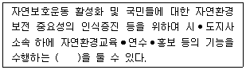
- 자연환경학습원
- 자연환경안내원
- 자연환경보전명예지도원
- 자연환경교육홍보원
(정답률: 64%)
6. 도시공원 및 녹지 등에 관한 법규상 도시공원을 주제공원으로만 분류한 것은?(단, 특별시⦁광역시 또는 도의 조례가 정하는 공원은 제외한다.)
- 소공원, 역사공원, 체육공원
- 수변공원, 근린공원, 체육공원
- 묘지공원, 수변공원, 문화공원
- 소공원, 어린이공원, 문화공원
(정답률: 95%)
7. 다음 보기에서 설명하고 있는 단지계획시 공원 녹지체계의 유형은?
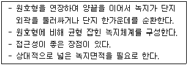
- 환상형(環狀型)
- 방사형(放射型)
- 위성식(衛星式)
- 점재형(點在型)
(정답률: 70%)
8. 다음 중 아름다움을 간직한 대표적인 통일신라의 석연지(石蓮池)는 어디에 있는가?
- 보은 법주사(法住寺)
- 경주 불국사(佛國寺)
- 합천 해인사(海印寺)
- 양산 통도사(通度寺)
(정답률: 73%)
9. '槐(귀신붙은 나무)'라고도 하며 토착신앙과 관련 있는 성수(聖樹)이기도 한 수목은?
- 대나무
- 오동나무
- 소나무
- 회화나무
(정답률: 83%)
10. 도시지역 안의 식생 또는 임상이 양호한 토지의 소유자와 해당 토지를 일반 도시민에게 제공하는 것을 조건으로 해당 토지의 유지⦁보존 및 이용 등에 필요한 지원을 하는 계약을 무엇이라고 하는가?
- 녹지활용계약
- 경관협정
- 녹화계약
- 녹지보전협약
(정답률: 76%)
11. 조경계획의 대상은 그 성격에 따라 몇 개의 그룹으로 나눌 수 있다. 레크리에이션계의 조경공간이 아닌것은?
- 도시공원
- 자연공원
- 경승지
- 보행자 공간
(정답률: 76%)
12. 다음 중 우리나라의 국립공원이 아닌 곳은?
- 지리산
- 설악산
- 한려해상
- 경포호
(정답률: 84%)
13. 신선설(神仙說)의 영향을 받아 발달한 일본정원의 초기 기본형은?
- 회유임천형(回遊林泉型)
- 중도임천형(中島林泉型)
- 침전조림형(寢殿造林型)
- 고산수식(枯山水式)
(정답률: 52%)
14. 도로법상 접도규역의 지정에 관한 다음 설명 중( ) 안에 알맞은 것은?
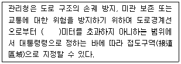
- 10
- 15
- 20
- 30
(정답률: 58%)
15. 중국 송나라의 휘종(徽宗)때에 주민이 설계한 정원으로서 항주의 봉황산을 닮게 하였다고 하는 정원은?
- 경산(景山)
- 만세산(萬歲山)
- 만수산(萬壽山)
- 아미산(蛾眉山)
(정답률: 86%)
16. 도시공원 및 녹지 등에 관한 법규상 도보권근린공원의 유치거리와 규모 기준으로 맞는 것은?
- 500m 이하, 5천제곱미터 이상
- 500m 이하, 1만제곱미터 이상
- 1000m 이하, 2만제곱미터 이상
- 1000m 이하, 3만제곱미터 이상
(정답률: 73%)
17. 년간 총 이용자수가 100000명, 최대일율이 0.04, 시설개장시간이 8시간, 평균체재 시간이 4시간인 계획대상지의 최대시 이용자 수는?
- 400명
- 800명
- 2000명
- 3200명
(정답률: 59%)
18. 도시의 생태적(生態的)설계 및 관리를 주장한 사람은?
- 옴스테드(Olmsted)
- 도니(Dorney)
- 케빈린치(Kevin Lynch)
- 튜너드(Tunnard)
(정답률: 65%)
19. 스페인의 알함브라 궁원의 파티오 중 부인실에 부속된 파티오는?
- 연못의 파티오
- 사자의 파티오
- 다라하의 파티오
- 레하의 파티오
(정답률: 84%)
20. 다음 중 미국에 위치한 공원으로 옴스테드(Frederick Law Olmsted)가 설계한 공원이 아닌 것은?
- 센트럴 공원(central park)
- 버컨헤드 공원(birkenhead park)
- 프로스펙트 공원(prospect park)
- 프랭클린 공원(franklin park)
(정답률: 83%)
2과목: 조경식재
21. 다음 중 일반적인 식재 구성상 교목 - 아교목 -관목의 순서로 옳게 나열된 것은?
- 전나무 - 단풍나무 - 산철쭉
- 독일가문비 - 칠엽수 - 자귀나무
- 회화나무 - 돈나무 - 꽝꽝나무
- 수양버들 - 목련 - 회양목
(정답률: 70%)
22. 다음 수목의 속명이 바르게 연결되지 않는 것은?
- 소나무 - Pinus
- 벚나무 - Prunus
- 솔송나무 - Tsuga
- 전나무 - Larix
(정답률: 79%)
23. 다음 중 대기오염의 피해를 가장 받기 쉬운 수목은?
- Cryptomeria japonica D.Don
- Platanus occidentalis L.
- Ginkgo biloba L.
- Viburnum odoratissmumvar. awabukiZabel ex Rumpler
(정답률: 78%)
24. 다음 그림과 설명이 의미하는 식물은?
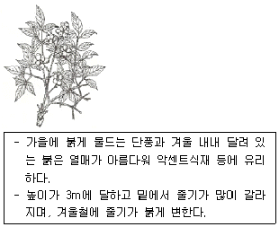
- Melia azedarach L.
- Elaeagnus umbellata Thunb.
- Pyracantha angustifolia C.K.Schneid.
- Nandina domestica Thunb.
(정답률: 58%)
25. 종자가 바람에 의해 산포되기 가장 어려운 수종은?
- 단풍나무
- 소나무
- 모감주나무
- 느릅나무
(정답률: 66%)
26. 주변 요소와 주종관계를 형성함으로써 관찰자의 시선을 집중시키는 식재 기법은?
- 연속
- 통일성
- 강조
- 균형
(정답률: 92%)
27. 일반적인 정원수 선택조건으로 옳지 않은 것은?
- 이식이 가능한 것
- 그 지방에 생육 가능한 것
- 관상면, 실용면으로 가치 있는 것
- 진귀하고 외국에서 수입된 것
(정답률: 88%)
28. 녹음수의 잎 1매에 의한 햇빛 투과양이 10%일 때 2매에 의한 반사흡수량은?
- 90%
- 93%
- 96%
- 99%
(정답률: 81%)
29. 실내공간의 식물 기능과 역할 중 식물을 이용하여 어떤 특정한 곳을 주변으로부터 격리시키는 건축적 기능은?
- 사생활보호
- 동선의 유도
- 공기의 정화
- 음향의 조절
(정답률: 89%)
30. 다음 중 심근성 수종은?
- Populus nigra var. italica Koehne
- Machilus thunbergii Siebold & Zucc
- Robinia pseudoacacia L.
- Picea jezoensis Carriere
(정답률: 62%)
31. 알칼리성 토양에서 잘 자라는 수종은?
- Ilex cornuta Lindl . & Paxton
- Rhododendron schlippenbachii Maxim
- Picea jezoensis Siebold & Zucc.
- Acer palmatum Thunb. ex Murray
(정답률: 53%)
32. 다음 자유형 식재에 관한 설명 중 틀린 것은?
- 인공적이기는 하나 그 선이나 형태가 자유롭고 비대칭적인 수법이 쓰인다.
- 기능성이 중요시되고 있다.
- 직선적인 형태를 갖추는 경우가 많아지고 단순 명쾌한 형태를 나타낸다.
- 부등변 삼각형 식재수법을 많이 쓴다.
(정답률: 54%)
33. 광색소인 파이토크롬(phytochrome)에 대한 설명으로 옳은 것은?
- 분자량이 1200 Dalton 가량 되는 두 개의 동일한 poly peptide로 구성되어 있다.
- 식물체내 대부분의 기관에 존재하지만, 생장점 부근이 가장 적다.
- 아주 높은 광도에서만 반응한다.
- 암흑 속에서 기른 식물체에서 많이 검출된다.
(정답률: 63%)
34. 다음 중 능소화과(科)에 속하는 수종은?
- 벽오동
- 꽃개오동
- 오동나무
- 참오동나무
(정답률: 86%)
35. 일반적인 양수(陽樹)의 외형적 특징 설명이 틀린것은?
- 유묘시 생장이 빠르나 나이가 많아짐에 따라 차차 느려진다.
- 가지는 소생하고 수관이 개방적이며, 아래가지는 일찍 말라 떨어져 버린다.
- 지엽이 밀생하고 가지를 치밀하게 치며 아래가지가 내부로 향한다.
- 줄기의 선단부와 굵은 가지가 남쪽 또는 햇볕이 있는 쪽으로 자라는 습성이 있다.
(정답률: 81%)
36. 식생(vegetation)을 분류하는 가장 기본적인 단위는?
- 종
- 군집
- 우점도
- 천이
(정답률: 68%)
37. 수목을 식재한 후 지주목 설치의 가장 중요한 목적은?
- 지주는 수목의 요동을 막고, 활착을 조장하는 역할을 한다.
- 지주목의 설치 그 자체가 관상의 주 대상이 된다.
- 지주목은 가급적 가장 저렴한 재료를 이용하므로 경제상 유리하다.
- 철사로 설치함이 지주목의 기능으로서 효과가 가장 크다.
(정답률: 93%)
38. 수목을 굴취한 후 운반하기 위한 보호조치 방법으로 옳지 않은 것은?
- 뿌리분의 보토를 철저히 한다.
- 세근이 절단되지 않도록 충격을 주지 않아야 한다.
- 수목과 접촉하는 고형분에는 완충재를 삽입한다.
- 가지는 결박하지 않고 효율적으로 이중적재 한다.
(정답률: 90%)
39. 잔디 뿌리의 생장 및 토양의 조건이 가장 우수한 토양 경도 지수는? (단, Yamanaka 식 토양경도계를 사용한 것으로 본다.)
- 18mm 이하
- 18 ~ 23mm
- 24 ~ 27mm
- 28 ~ 30mm
(정답률: 71%)
40. 자연풍경식재의 정원수 기본 패턴에 해당하는 것은?
- 부등변삼각형식재
- 4본 식재
- 열식(列植)
- 표본식재
(정답률: 87%)
3과목: 조경시공
41. 다음 그림과 같이 양단이 회전단인 부재의 좌굴축에 대한 세장비는? (단, 기둥의 길이는 6.6m이고, 단면은 30× 50cm 이다.)
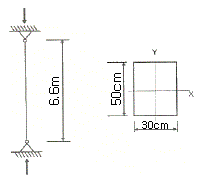
- 76.21
- 84.28
- 94.64
- 103.77
(정답률: 38%)
42. 흙의 휴식각에 대한 설명 중 틀린 것은?
- 휴식각은 일반적으로 함수율이 증가할수록 작아진다.
- 실제 흙의 휴식각에는 응집력과 부착력이 작용하게 된다.
- 흙 입자간 마찰력 만으로서 중력에 대하여 정지하는 흙의 사면 각도이다.
- 흙막이가 없는 경우 흙파기 경사는 경사각의 2배 또는 기초파기 윗면 나비는 +0.6H이다.
(정답률: 58%)
43. 다음 ( )안에 각각 적합한 용어는?
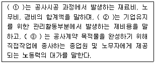
- ① 순공사비 ② 공사원가 ③ 간접노무비
- ① 공사원가 ② 일반관리비 ③ 간접노무비
- ① 순공사비 ② 공사원가 ③ 직접노무비
- ① 공사원가 ② 일반관리비 ③ 직접노무비
(정답률: 70%)
44. 굵은 골재의 각 함수 상태에 계량한 값이 다음과 같다. 이때 표면수량과 함수량(%)은 얼마인가?
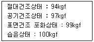
- 표면수량 2.06%, 함수량 5.0%
- 표면수량 1.01%, 함수량 6.38%
- 표면수량 2.06%, 함수량 7.⑤%
- 표면수량 1.01%, 함수량 6.0%
(정답률: 67%)
45. 다음 그림과 같이 하중을 받고 있는 보에서 지점 B의 반력이 3W라면 하중 3W의 재하 위치 x는 얼마인가?
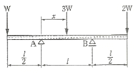
- ㅣ/2
- ㅣ/4
- ㅣ/6
- ㅣ/8
(정답률: 45%)
46. 다음과 같은 삼각형 ABC의 면적은? (단, 헤론의 공식을 이용하여 계산한다.)
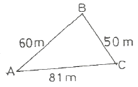
- 153.04m2
- 235.09m2
- 1495.57m2
- 2227.50m2
(정답률: 75%)
47. 다음 중 석재에 대한 설명 중 틀린 것은?
- 인장강도는 압축강도보다 크다.
- 내구성, 내수성, 내화학성이 풍부하다.
- 종류가 다양하고 색조에 광택에 있어 외관이 장중 미려하다.
- 화열을 받으면 화강암과 같이 균열을 일으키거나 파괴되고 석회암, 대리석과 같이 분해되어 강도를 상실 하는 것도 있다.
(정답률: 68%)
48. 다음 중 열경화성 합성수지는?
- 아크릴수지
- 페놀수지
- 염화비닐수지
- 폴리에틸렌수지
(정답률: 52%)
49. 다음 중 합판의 특성 설명으로 옳지 않은 것은?
- 제품이 규격화되어 사용에 능률적이다.
- 목재를 완전히 이용할 수 있고 목재의 결점을 보완할 수 있다.
- 팽창, 수축 등에 의한 결정이 없고 방향에 따른 강도의 차이가 없다.
- 일반목재에 비하여 내구성, 내습성이 작으나 접합하기가 쉽다.
(정답률: 56%)
50. 암석은 생성원인에 따라 화성암, 변성암, 퇴적암으로 구분된다. 다음 중 생성 원인이 다른 암석은?
- 화강암
- 안산암
- 섬록암
- 편마암
(정답률: 63%)
51. 다음 중 건설산업기본법의 분류에 따른 건설공사에 속하지 않는 것은?
- 산업설비공사
- 환경시설공사
- 조경공사
- 문화재수리공사
(정답률: 83%)
52. 토공사용 기계로서 흙을 깎으면서 동시에 기체 내에 담아 운반하고 깔기작업을 겸할 수 있으며, 작업거리는 100~1500m 정도의 중장거리용으로 쓰이는 것은?
- 트렌처
- 그레이더
- 파워쇼벨
- 캐리올스크레이퍼
(정답률: 75%)
53. GIS에서 기존의 도면을 이용하여 자료를 입력하는 방법으로 어느 정도 훼손된 도면도 입력이 가능하며 불필요한 속성, 주기는 선택하여 입력하지 않을 수 있는 것은?
- 디지타이저
- 위성영상
- 스캐너
- GPS
(정답률: 62%)
54. 다음 중 칠공사에서의 철제계단(양면칠) 소요면적 계산으로 옳은 것은?
- 경사면적 × (2.5~3배)
- 경사면적 × (3~5배)
- 경사면적 × 2배
- 경사면적 × 1.5배
(정답률: 57%)
55. 토량 470m3를 불도저로 작업하려고 한다. 작업을 완료하기까지의 소요시간을 구하면?(단, 불도저의 삽날용량은 1.2m3, 토량환산 계수는 0.8, 작업효율은 0.8, 1회 싸이클 시간은 12분이다.)
- 120.40 시간
- 122.40 시간
- 132.40 시간
- 140.40 시간
(정답률: 63%)
56. 바람의 속도압이 171kgf/m2 되는 곳에 표준형 벽돌 1.0B로 담장을 설치하려 한다. 담장의 측지사이 거리(L)와 담장의 폭(T)의 최대비가 13일 때 측지의 간격은 얼마인가?
- 2.28m
- 2.47m
- 2.52m
- 2.73m
(정답률: 50%)
57. 아래 그림과 같이 장애물이 있는 지역에서 BC의 거리는 얼마인가? (단, A B C는 직삼각형이다.)
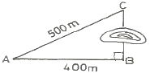
- 300m
- 400m
- 500m
- 600m
(정답률: 77%)
58. 단독도급과 비교하여 공동도급(joint venture)방식의 특징으로 거리가 먼 것은?
- 2 이상의 업자가 공동으로 도급함으로서 자금 부담이 경감된다.
- 대규모 공사를 단독으로 도급하는 것 보다 적자 등의 위험 부담이 분담된다.
- 공동도급 구성된 상호간의 이해 충돌이 없고 현장관리가 용이하다.
- 고도의 기술을 필요로 하는 공사일 경우, 경험기술이 부족한 업자도 특히 그 공사에 능숙한 업자를 구성원으로 참여시켜 안전하게 대처할 수 있다.
(정답률: 77%)
59. 다음과 같은 높이를 갖는 지형을 100m 높이로 정지 작업할 때 절취해야 할 토량은? (단, 하나의 기본 구형은 5m×10m 이다.)
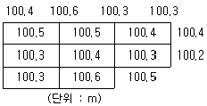
- 65m3
- 98m3
- 126m3
- 165m3
(정답률: 38%)
60. 노선측량에서 완화곡선이 아닌 것은?
- 3차 포물선
- 머리핀 곡선
- 클로소이드 곡선
- 램니스케이트 곡선
(정답률: 54%)
4과목: 조경관리
61. 다음 중 수목의 부정아(不定芽)를 유도하기 위한 직접적인 조치로 가장 적합한 것은?
- 객토와 경운
- 복토와 멀칭
- 단근과 적심
- 관수와 배수처리
(정답률: 84%)
62. 식생으로 인하여 그늘이 지게되면 식물의 종자 발아가 억제되는 그 이유를 파이토크롬(phytochrome)과 관련하여 옳게 설명한 것은? (단, Pfr은 적외선광, Pr은 적색광이다.)
- Pfr/Pr의 비율과는 관계 없다.
- Pfr/Pr의 비율이 낮기 때문이다.
- Pfr/Pr의 비율이 높기 때문이다.
- Pfr/Pr의 비율이 같기 때문이다.
(정답률: 63%)
63. 난지형(暖地型)잔디에 뗏밥을 주는 시기는 언제가 가장 적당한가?
- 3 ~ 4월
- 6 ~ 7월
- 10 ~ 11월
- 12 ~ 2월
(정답률: 65%)
64. 철이 결핍된 식물에 나타나는 대표적인 증상은?
- 잎이 찢어진다.
- 줄기가 마른다.
- 잎이 누렇게 된다.
- 잎이 위쪽으로 말린다.
(정답률: 58%)
65. 다음 중 파손된 아tm팔트 도로포장 부분 주위를 4각형이 되도록 절단하여 따낸 후 보수를 실하는 부분 보수방법은?
- 표면처리공법
- 덧씌우기공법
- 패칭공법
- 치환공법
(정답률: 78%)
66. 약제를 식물의 줄기, 잎, 뿌리에 처리하여 식물 전체로 확산시켜서 이 식물을 섭식하는 해충에 살충력을 나타내는 약제의 종류는?
- 훈증제
- 소화중독제
- 화학불임제
- 침투성살충제
(정답률: 74%)
67. 다음 보기가 설명하는 곤충의 목(目)은?
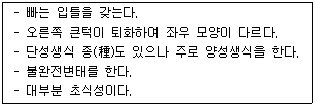
- 나비목
- 흰개미목
- 딱정벌레목
- 총채벌레목
(정답률: 62%)
68. 야영장의 내부가 고사 된 수목에 겉만 보고 텐트줄을 지지하였는데 폭풍으로 고사목이 쓰러져 야영객이 다쳤다면, 다음 중 어떤 유형의 사고에 가장 근접하겠는가?
- 설치하자에 의한 사고
- 관리하자에 의한 사고
- 이용자 부주의에 의한 사고
- 자연재해에 의한 사고
(정답률: 76%)
69. 다음 중 콘크리트 옹벽이 앞으로 넘어질 우려가 있을 때 옹벽 뒷면의 지하수를 배수 구멍에 유도시키고 토압을 경감시키는 공법은?
- 그라우팅공법
- P·C 앵커공법
- 부벽식콘크리트공법
- 압성토공법
(정답률: 66%)
70. 리바이짓드 유제 30%를 250배로 희석해서 10a당 5말을 살포하여 해충을 방제하고자 할 때 리바이짓드 유제 30%의 소요량은 몇 mL 인가? (단, 1말은 18L로 한다.)
- 144
- 244
- 288
- 360
(정답률: 32%)
71. 건설현장의 재해발생 원인은 관리적 원인, 기술적 원인, 정신적 원인으로 구분한다. 그 중 관리적 원인에 해당하는 것은?
- 정신적인 동요
- 장비조작기준의 부적당
- 점검 보전의 불충분
- 안전기준의 부정확
(정답률: 51%)
72. 잔디밭 관리에 있어서 에어레이션(aeration)의 실시 목적이 아닌 것은?
- 북더기 잔디의 제거
- 두꺼운 잔디층 조성
- 투수성 촉진
- 산소의 공급
(정답률: 80%)
73. 농약의 입제(粒劑)에 대한 설명으로 옳지 않은 것은?(오류 신고가 접수된 문제입니다. 반드시 정답과 해설을 확인하시기 바랍니다.)
- 살포가 용이하고 환경오염이 적다.
- 제조과정이 다른 제형보다 간단하고 값이 저렴하다.
- 입자가 크므로 농약을 살포하는 농민에 대하여 안전성이 높다.
- 다른 제형에 비하여 많은 양의 주성분이 투여되어야 목적하는 방제효과를 얻을 수 있다.
(정답률: 50%)
74. 특수 제작된 고밀도 폴리에틸렌(HDPE)수지를 이용하여 비탈면 다듬기공사를 한 곳에 지형에 따라 일정한 규격의 너비, 길이, 두께로 제작된 섹션을 상부와 하부에 줄을 맞추어 고정시키고 서로 연결한 후 섹션안에 흙을 채우는 공법은?
- 원지반식생정착공법(CODRA 공법)
- 자연표토복원공법(SF 녹화공법)
- 녹생토암절개면보호식재공법(R/S 녹생토공법)
- 지오웨브(Geoweb)공법
(정답률: 72%)
75. 참나무 시들음병의 매개충은?
- 없음
- 광릉긴나무좀
- 솔수염하늘소
- 오리나무잎벌레
(정답률: 77%)
76. 도급방식의 구분 중 도급방식에 의한 조경관리 대상에 해당하지 않는 것은?
- 전문적 지식이나 기능을 요하는 업무
- 금액이 적고 간편한 업무
- 관리주체가 보유한 설비나 장비로는 곤란한 업무
- 직영의 인원으로 부족한 업무
(정답률: 76%)
77. 배수가 불량한 도로의 관리를 위해 도로 양측에 총 연장 4km 길이의 그림과 같은 측구를 굴착하고 자갈을 채우려한다. 소요되는 총 자갈량은? (단, 할증율과 공극은 무시한다.)
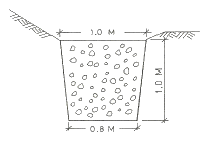
- 3600m3
- 1800m3
- 900m3
- 450m3
(정답률: 67%)
78. 작물이 흡수할 수 있는 토양수분(유효수분)의 수분장력은 pF값으로 얼마나 되는가?
- 0.5 ~ 1.5
- 1.5 ~ 2.5
- 2.5 ~ 4.5
- 4.5 ~ 6.5
(정답률: 57%)
79. 기생성 종자식물에 의한 수목의 피해현상과 관계가 먼 것은?
- 감염부위의 비대
- 뿌리썩음
- 수목의 양·수분 탈취
- 줄기와 가지마름
(정답률: 58%)
80. 그림의 은선은 가지의 기부가 굵은 지융부가 있는 활엽수의 가지치기를 부위를 나타낸 것이다. 가장 적당한 부위는?
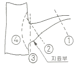
- ①
- ②
- ③
- ④
(정답률: 85%)